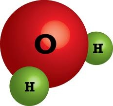

Хімічні властивості
Молекули води мають слабку здатність до зворотної іонізації шляхом розпаду на протон H+ і гідроксид-іон OH-:
Попри те, що одним із продуктів дисоціації є протони, вони не існують у воді у вільному стані, а натомість відразу ж приєднуються до молекул H2O з утворенням іонів гідронію H3O+. Внаслідок іонізації чиста вода до певної міри може проводити електричний струм. При чому гідроксид- і гідроній-іони в електричному полі рухаються значно швидше ніж інші іони. Це пояснюється явищем «перестрибування протонів»: жоден індивідуальний іон не переміщується на великі відстані, натомість відбувається перенесення протонів між молекулами води, з'єднаними між собою водневими зв'язками. Таким чином виникає сумарний рух гідроній-іонів до катода, а гідроксид-іонів — до анода. «Перестрибування протонів» також призводить до того, що у водних розчинах дуже швидко проходять кислотно-основні реакції.
У стані рівноваги тільки невеличка частина молекул води іонізовані, так при температурі 25 °C на іони розпадається приблизно одна молекула із півмільярда. Іонний добуток води ({H+}×{OH-}, де {H+} і {OH-} — активності відповідних іонів) є сталою величиною і становить 1×10−14 M2, оскільки у чистій воді концентрації (і активності) іонів OH- і H+ рівні, то кожна з них рівна 1×10−7 M2. Негативний десятковий логарифм із {H+} називається pH (водневий показник), відповідно для чистої води, яка є абсолютно нейтральною, він становить 7.
У хімічному відношенні вода досить активна. З багатьма речовинами вона вступає в хімічні реакції вже при звичайній температурі. З оксидами лужних і лужноземельних металів вона утворює основи:
СаО + Н2О = Са(ОН)2
З багатьма оксидами неметалів (ангідридами) вода утворює кисневмісні кислоти:
Р2О5 + 3Н2О = 2Н3РО4
З найактивнішими металами вона утворює основи з виділенням водню:
2Na + 2Н2О = 2NaOH + Н2 ↑ З деякими солями вода утворює так звані кристалогідрати, які характеризуються строго визначеною кількістю молекул води, що припадають на одну молекулу солі. Наприклад, з сульфатом міді вода утворює мідний купорос:
CuSO4 + 5Н2О = CuSO4 • 5Н2О
в якому на одну молекулу сульфату міді припадає п'ять молекул води. Воду, що входить до складу кристалів, називають кристалізаційною.
Кристалізаційну воду не слід плутати з гігроскопічною водою, яка поглинається (адсорбується) поверхнею і порами всіх речовин на відкритому повітрі. Деякі речовини відзначаються підвищеною здатністю поглинати вологу повітря. Внаслідок цього вони мокріють (наприклад, NaCl), а то й і розпливаються на повітрі (як CaCl2). Такі речовини називають гігроскопічними. На відміну від кристалізаційної, кількість гігроскопічної води в речовинах, змінна. Вона хімічно не взаємодіє з речовиною-адсорбантом.
При високій температурі водяна пара взаємодіє з залізом і іншими речовинами. Наприклад:
3Fe + 4Н2О = Fe3О4 + 4Н2
Раніше цю реакцію застосовували в техніці для добування водню.
У термічному відношенні вода досить стійка. Проте при температурах, вищих 1000°С, вона починає розкладатися на водень і кисень:
2Н2О = 2Н2 + O2
Хімічна сумісність вод — здатність вод не утворювати твердих осадів при їх змішуванні.